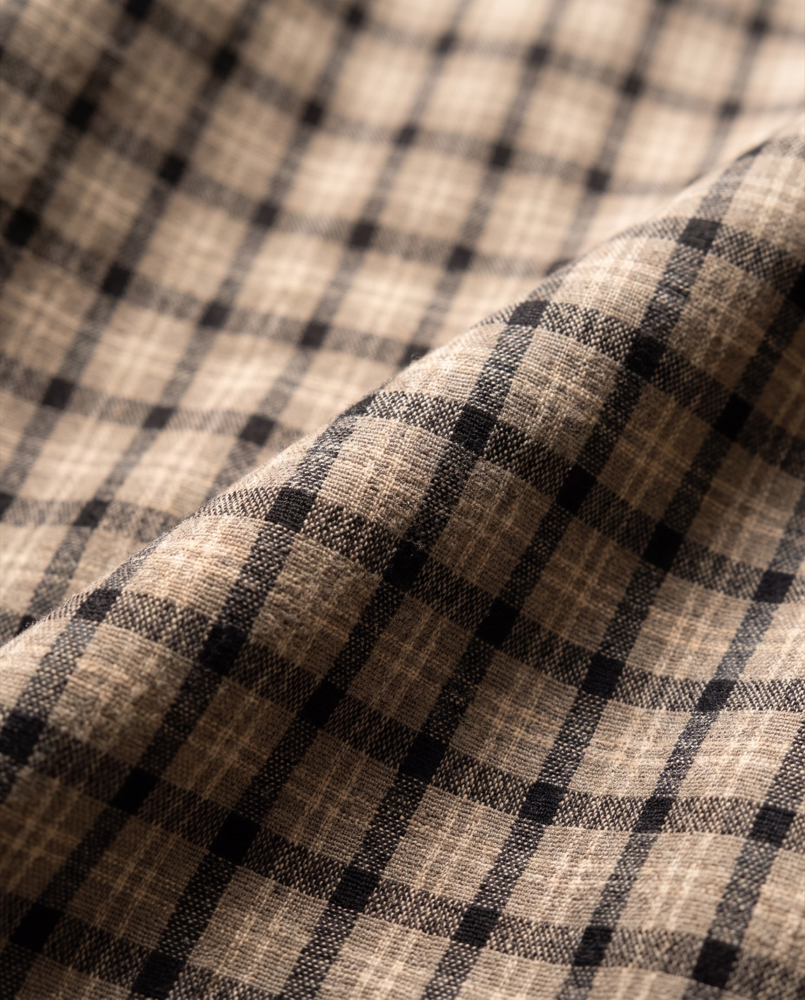
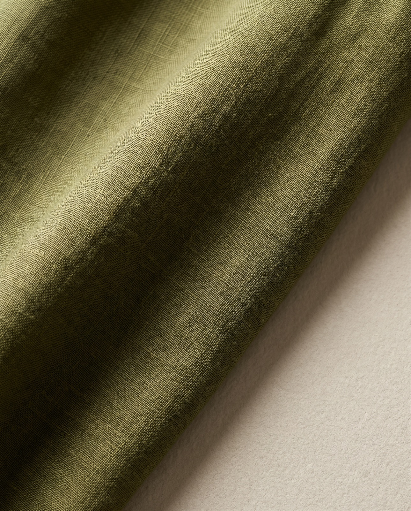
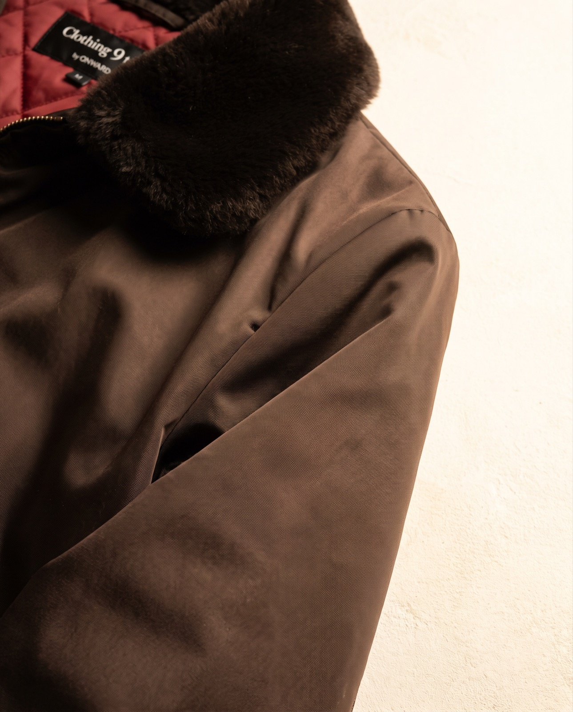
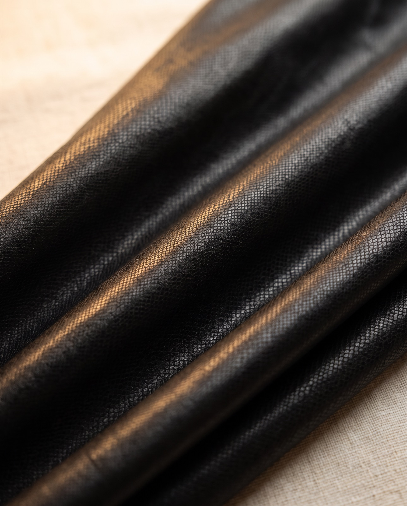
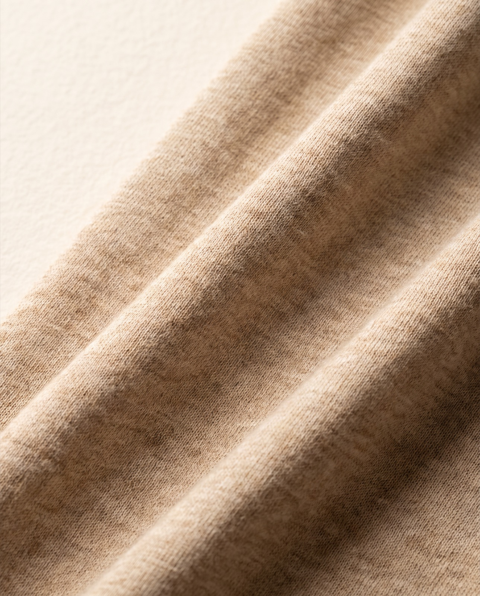
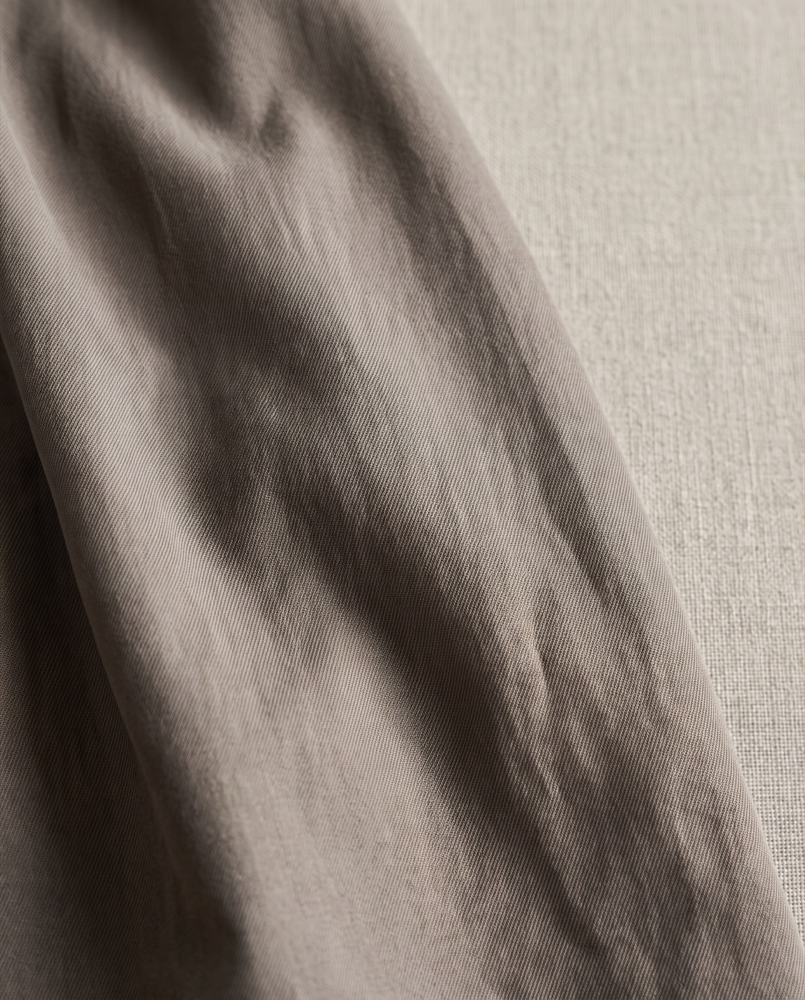
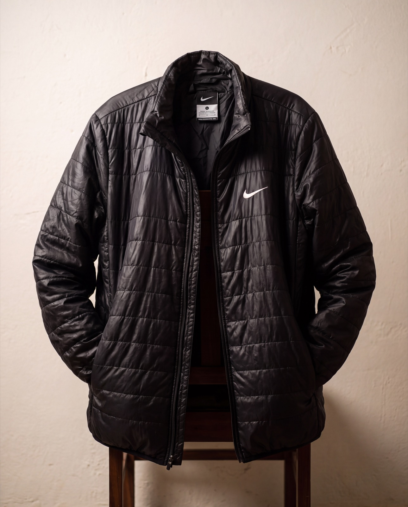

Archive 01
21 pieces
One of each
Pre-owned. Restyled. Photographed properly.
Worn once.
Wanted twice.
Scroll
Archive 01
21 pieces
One of each
Pre-owned. Restyled. Photographed properly.
Scroll
0
Pieces in the archive
1/1
Of every item
0
Flaws disclosed
₹800
Archive starts at
01 — The idea
Most second-hand clothing is sold badly. A flat photo on a bed, a brand name, a price. Nothing about how it feels to wear, or what it does to the rest of your wardrobe.
This archive is the opposite. Every piece was chosen one at a time, styled into a complete outfit, and listed with its real size, its real material and its real flaws.
One of each. No restock. When it's gone, that's the end of it.
01
You find the piece
Every listing carries the real size, the real material, and a Product Health score. If there's a mark on it, it's written down and photographed.
02
You message me
WhatsApp or email. No cart, no checkout, no shipping-label roulette. We talk, you decide.
03
It arrives ready
Steamed, lint-rolled, folded on tissue. The way you'd want to receive something you're going to wear on day one.


02 — The pieces of this drop
All 21 →03 — Browse the archive
04 — In the detail





